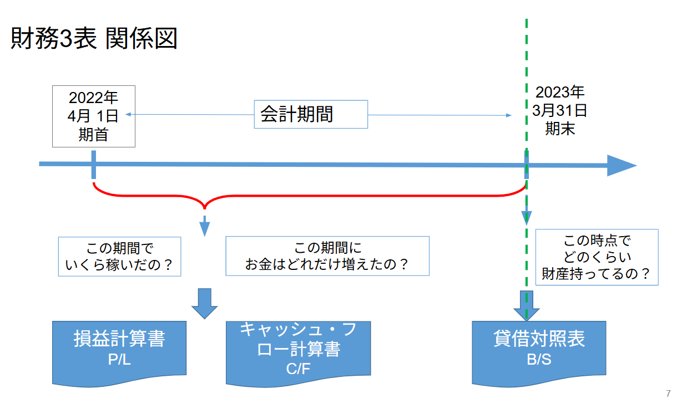
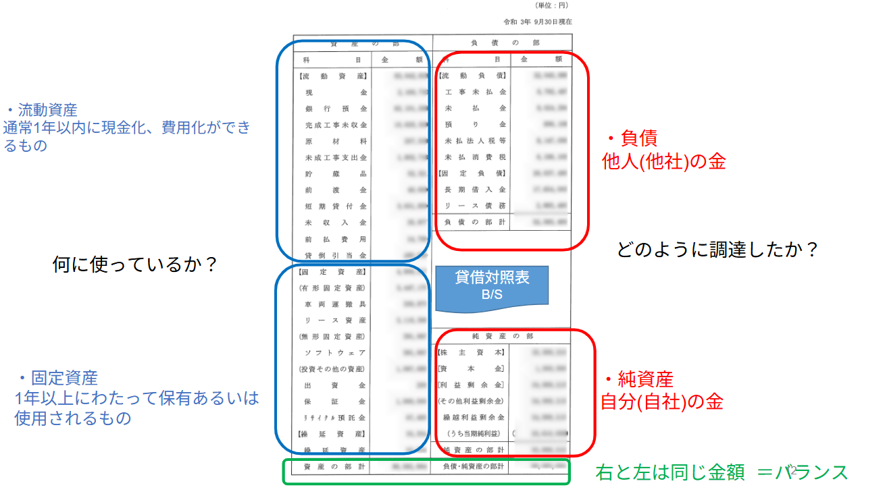
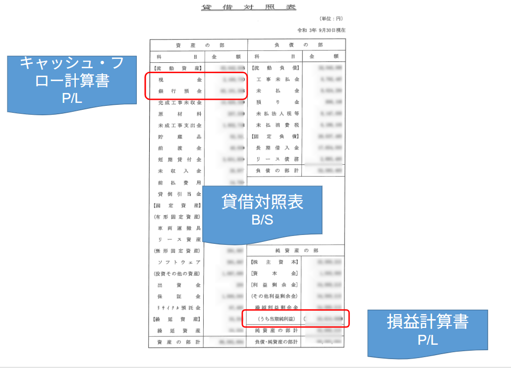
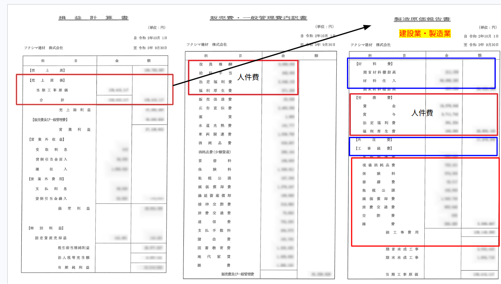

2026年5月18日の午後、フクシマ建材のマドラボで 社内財務研修の第1回 が行われた。講師は福嶋智和、受講は芦村幸亮・福嶋亮子の2人。テーマは 「管理層が自分の言葉で数字を語れるようになる」 こと。
BSとPLの基本構造、製造業・建設業特有の人件費の入り方、減価償却の考え方を順に確認し、最後に 変動損益計算書の導入 を決定した。聞いて終わりではなく、2人が次回までに振り返って発表し、その先で全社員に伝える ところまで設計された研修。
本日の流れ
13:20開始、約70分。場所はフクシマ建材のマドラボ。福嶋智和が講師となり、芦村幸亮と福嶋亮子の2人が受講した、社内初の財務研修。同席で録画した内容はGeminiが自動文字起こし・要約まで生成し、本記事はそのメモを下敷きにAIで再構成したもの。次回（木曜15時から）は、芦村・亮子が今日の内容を振り返って5〜10分で発表する 形式で進む。
1. なぜ「人に教える」が一番効くのか
研修の冒頭は学習設計の話から始まった。講義を聞くだけでは 3日後にほぼゼロ に戻る。定着のためには、読書・準備・ディスカッション・ワークショップ・自ら体験、そして 他者への教示 という順で効果が上がる。最も学びが深くなるのは「教える」段階。
聞いたこと、勉強したことを、そのまま人に伝える。
伝えるためには、聞いたことを理解していないと伝えられない。
だから「教える」が一番きく。 研修冒頭の方針
この方針を受けて、今後は 芦村・亮子が全社会議の場で数字について社員に伝える機会 を作っていく。今日の内容も、次回はまず2人が自分の言葉で振り返って発表する。
2. 数値学習のゴール — 「トトロの図」を描けること
経営数値を学ぶ目的は、損益構造を理解して 「トトロの図」 ──PQ・VQ・MQ・F・利益の関係図──を自分の手で描けるようになることにある。現状の数字と、3年後の目標数字、その両方をこの図の上に置けることが、経営計画策定の出発点。
その手前で押さえておくべき土台が、財務3表（BS・PL・CF）の役割と、特に BSとPLの基本構造 の理解になる。
3. 財務3表の役割 — BS・PL・CFの位置関係
財務3表は、それぞれ会社の違う断面を切り取って見せる。

| 表 | 何を表すか | 自社での優先度 |
|---|---|---|
| 貸借対照表（BS） | 決算日時点での会社の財産状態（土台） | 高い |
| 損益計算書（PL） | 1年間の成績表（売上・費用・利益） | 高い |
| キャッシュフロー計算書（CF） | 1年間でお金がどう動いたか | 低め（資金繰りに困っていない現状では） |
CFが今は優先度低めなのは、自己資本を積み上げてきた結果として 資金繰りに困っていない 状態だから。BS（土台）が安定しているからこそ、CFを毎月睨む必要が薄くなっている、という構造。
4. 貸借対照表（BS） — 調達と運用がバランスする
BSは「決算日時点で会社が何を持っているか」を切り取ったもの。左右に分けて見るのが基本。

- 左側（資産の部）：調達した資金が、いま何の形になっているか。現金・銀行預金・在庫・建物・車両・ソフトウェアなど
- 右側（負債・純資産の部）：その資金をどこから引っ張ってきたか。借入金は「他人資本」、資本金や利益剰余金は「自己資本」
- 調達した資金は必ず何かの資産に姿を変えるので、左右は必ず一致（バランス）する

5. 損益計算書（PL） — 売上から純利益までの流れ
PLは1年間の損益を、上から順に引き算で並べた表。
| 項目 | 計算式 |
|---|---|
| 売上総利益（粗利益） | 売上 − 売上原価 |
| 営業利益 | 売上総利益 − 販売費及び一般管理費 |
| 経常利益 | 営業利益 ± 営業外損益 |
| 税引前当期純利益 | 経常利益 ± 特別損益 |
| 当期純利益 | 税引前 − 法人税等 |
フクシマ建材では 営業利益と経常利益をほぼ同等 とみなして判断する方針。営業外損益が大きく振れない事業構造のため、現場の判断はまず営業利益を見て動かす。
6. 製造業・建設業の決算書 — 人件費は販管費ではなく原価へ
ここが今日の研修で最も「ふつうの教科書と違う」部分だった。

税務上の決算書はあくまで 納税のための数字 として作られている。経営判断のためには、人件費を適切に切り分けて、後述の 変動損益計算書 に組み直して見る必要がある。
7. 減価償却 — 設備投資を耐用年数で分割する
車両や設備に投資した費用を、購入年に全額計上するのではなく、法律で定められた耐用年数 にわたって分割して経費化していくのが減価償却。BSの固定資産は、年が経つにつれて少しずつ減少していき、その減った分がPLの減価償却費として現れる。
この仕組みを押さえておくと、「PLに大きな経費が乗っていないのに現金が減っている」とか、その逆の状況を、感覚ではなく構造で説明できるようになる。
8. 自己資本の蓄積 — 経営の安定性をどう作るか
経営の安定性を高めるには、他人資本（借入金）を減らし、自己資本を増やす ことが王道。自己資本を増やす方法は、突き詰めると2つしかない。
- 資本金の追加投入（株主からの増資）
- 当期純利益の蓄積（毎年の利益を内部留保として積み上げる）
フクシマ建材はこれまで、後者の積み上げで純資産を増やしてきた。決算賞与の支給額を決める際も、確定前の 営業利益などの数値をベースに配分率を考慮 して決める方針。現状は半期ごとの実績に基づき、夏の賞与などへ反映する形で運用されている。
9. 変動損益計算書の導入 — なぜ通常のPLでは予測できないか
研修の後半、最も重要な決定がここで出た。
従来のPLは、変動費（売上に比例して増減する費用）と固定費（売上にかかわらず発生する費用）が混在 している。さらに前述のとおり、製造業・建設業では人件費が原価側に入り込んでいる。この状態では、売上が増えたときに利益がどれだけ増えるのか、損益分岐点がどこにあるのか、を正確に読むことができない。
| 区分 | 定義 | 具体例 |
|---|---|---|
| 変動費 | 売上に比例して発生する費用 | 仕入れ／材料／外注費 の3つに限定 |
| 固定費 | 売上の有無にかかわらず発生する費用 | 給与・家賃・広告宣伝費・減価償却費 など |
変動費は「仕入れ・材料・外注費」の3つだけ。
給与は売上が止まっても払うものだから、製造原価に入っていても固定費として切り出して見る。 変動損益計算書の組み換え方針
こうして組み換えたPLが 変動損益計算書。売上から変動費を引いた「限界利益（粗利）」と、そこから固定費（F）を引いた「経常利益」が一目で並ぶ。限界利益率（粗利率） を正確に把握できれば、損益分岐点と、目標利益を達成するために必要な売上が逆算できる。
これまでの経営支援セッションでも繰り返し出てきた経営の基本式──M（マージン＝粗利単価）× Q（クオンティティ＝物件数）− F（固定費）──の「F」を、自社の変動損益計算書から正しく取り出せるようになること。それが、次の経営計画書策定の土台になる。だから、今日この研修を社内で始めた。
10. 本日の主要決定
| 項目 | 確定内容 |
|---|---|
| 研修形式 | 「聞く」だけで終わらせず、次回は芦村・亮子が振り返りを5〜10分で発表 |
| 数値の社内展開 | 全社会議の場で、芦村・亮子が 数値について社員に伝える機会 を設ける |
| 営業利益と経常利益の扱い | フクシマ建材ではほぼ同等とみなし、まず 営業利益 をベースに判断 |
| 経営計画の数値ベース | 税務上のPLではなく、変動損益計算書に組み換えた数値 で計画を立てる |
| 変動費の定義 | 仕入れ・材料・外注費の 3つに限定。給与は固定費へ |
| 限界利益率（粗利率）の把握 | 損益分岐点を割り出すため、自社の粗利率を 正確に押さえる |
| 次回 社内財務勉強会（MG研修） | 木曜15時から1時間 程度の枠で実施 |
アクションアイテム
| タスク | 担当 | 期限 |
|---|---|---|
| 今日の研修内容を振り返り、次回5〜10分で発表できる形にまとめる | 芦村幸亮・福嶋亮子 | 次回研修まで |
| 全社会議で数値について伝える機会を設計する | 福嶋智和 ＋ 芦村・亮子 | 今後の全社会議 |
| 自社の決算書を「変動損益計算書」に組み換える | 福嶋智和 | 次回経営計画策定までに |
| 限界利益率（粗利率）を正確に算出して共有する | 福嶋智和 | 随時 |
| 次回 社内財務研修（木曜15時）に参加 | 芦村幸亮・福嶋亮子 | 次回開催日 |
次の節目
次回 社内財務研修
木曜15時からマドラボで1時間程度。冒頭で芦村・亮子の振り返り発表が入り、その後で次のテーマへ進む。2人が「自分の言葉で説明できる」ところまで持っていくのが、この研修シリーズ全体のゴール。
編集後記
今日の研修は、内容そのものよりも 「研修の作り方」 の話から入ったのが象徴的だった。福嶋智和は冒頭で、講義を聞いただけでは3日で忘れる、だから次回は芦村・亮子の方が振り返って発表してくれ、と言い切った。その先には2人が全社会議で社員に伝えるところまで道筋が引いてある。研修のゴールが「2人の理解」ではなく、「組織全体が数字で話せるようになること」 に置かれている。
内容面で残ったのは、製造業・建設業の決算書は人件費が原価に入る という一点に集約される。サービス業向けに書かれた一般的な財務本を読んでも、自社のPLを正しく読み解けない理由はここにある。変動損益計算書への組み換えは、その特殊性を取り除いて、経営判断のための数字 として読み直す作業。智和がこの数年、経営支援セッションを通じて自分の中で噛み砕いてきた内容を、いま社内へ手渡そうとしている、その第一歩。
そしてこの作業は、これまでの経営支援で繰り返し出てきた 「MQF」の経営式（M＝粗利単価／Q＝物件数／F＝固定費）の「F」を、自社の実態に即した正しい値で取り出すための前準備でもある。今日の研修は単体で完結する話ではなく、来期の経営計画書策定までに 幹部層が同じ言葉で数字を語れる 状態を作るための地ならし。マドラボの一室で、2人を相手に始まった財務研修は、半年後には全社員の数字感覚として返ってくる、はず。